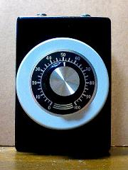

アッテネーター 8Ω 60W
2010年02月21日 カテゴリー：ギターアンプ・ベースアンプ

アンプのカテゴリではないかもしれませんが、アッテネーターを作りました。作ったといっても単にGarrettaudioの8Ω(60W)のアッテネーター（ボリューム）にジャックをつないだだけです。思ったよりサイズが大きかったので、タカチの少し大きめのケースです。念のため側面に放熱用の穴を開けました。シャフトが長いためワッシャーの下にそこらへんにあった缶のフタを使っています。
先日自作したChampにはマスターボリュームがついていないので、歪ませる場合はどうしても音が大きくなってしまいます。そこでアッテネーターを使うわけですが、あまり音量を小さくすると高域が下がってしまいますね。まぁあまり気にしないことにします。